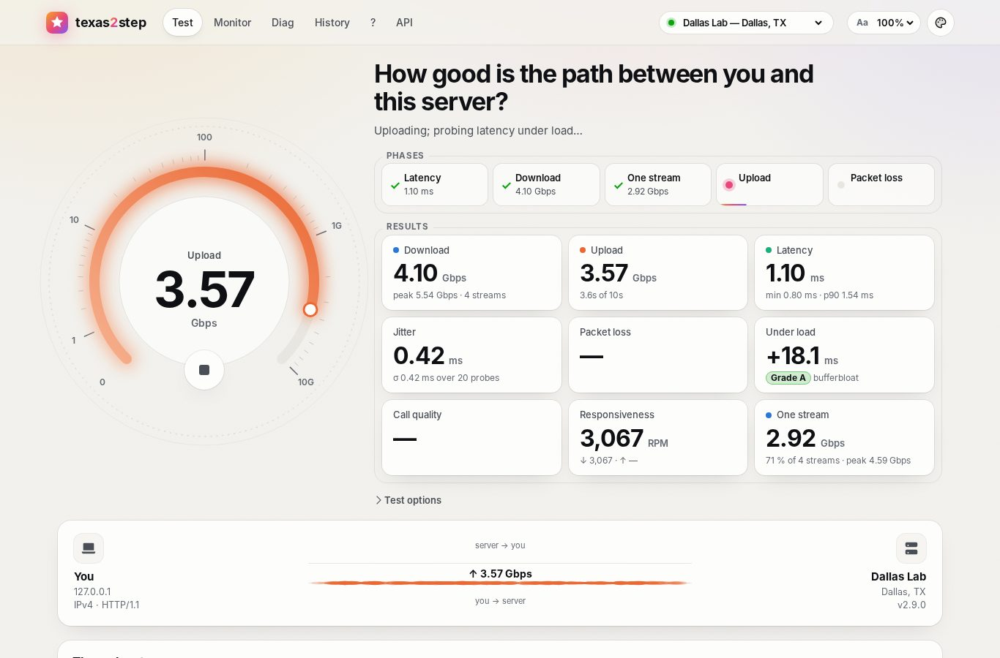

texas2step at a glance
Free and open source · Apache License 2.0A network test you host yourself, measuring what your users experience: from their own browser, phone or command line to your servers.
Throughput, latency, jitter, real UDP packet loss, call quality and responsiveness, with tools for the service desk and for engineers.
Why network teams run it
- It tests your paths. Servers in your data centers, branches and cloud regions measure the path your applications take, not the way to a public speed test.
- Nothing to install for the person testing. A browser on a laptop or phone runs every test. t2s, one file for Linux, macOS and Windows, does the same from servers and scripts.
- It finds what a speed figure hides: packet loss each way over real UDP, call quality, latency under load (bufferbloat), and which protocols and address families get through.
- The service desk can act on it. A caller reads out a short Result ID, and History lists every saved test with the address it came from.
- It stays inside your network. No CDN, analytics, telemetry or cookies. It runs on air-gapped networks and updates from a local directory or mirror.

What it does
| What it shows | Web page | t2s | API | |
|---|---|---|---|---|
| Speed test | Download and upload, many streams and one; latency and jitter, idle and under load (bufferbloat, A+ to F); UDP loss and call quality (MOS) each way; responsiveness (RPM); readiness for video, calls, VDI and file transfers | Test | t2s run | /api/v1/measure/full |
| Monitor | A continuous UDP trace of round trip and loss over 1, 5 or 15 minutes, or a voice or video call scored every 10 seconds; one server, or two side by side | Monitor | t2s monitor | |
| Diag | HTTP/1.1, HTTP/2, HTTP/3, WebSocket and UDP over IPv4 and IPv6, tried once a second; your addresses, NAT, TLS and DTLS, and an event log | Diag | t2s diag | /api/v1/diag/http |
| IPv4 and IPv6 | Each address family tested on its own | IP switch | -4, -6 | A name per family |
| Several servers | A server picker; any server measures another on request | Picker | The server's URL | /api/v1/measure/* |
| Saved results | Short Result IDs, History, a share link and a JSON download | History | --save | /api/v1/results |
| Automation | JSON output, copy-ready examples and an OpenAPI explorer | API tab | --json | /api/docs |
Where it helps
| Situation | Use | What you learn |
|---|---|---|
| Slow for a remote worker | The Test page; they read out the Result ID | Speed, loss and bufferbloat on their own connection. A nearby server and a distant one tell their Wi-Fi or ISP apart from your WAN. |
| Choppy Teams or Zoom calls | Test page call quality; Monitor's call profiles | The score each way, and whether loss comes in bursts, late, or one way |
| Wi-Fi dead spots | Monitor on a phone, walking the building | Spikes and loss marks show where coverage fails |
| A new circuit or site | t2s run --save on site, or server to server | Throughput both ways, the one-stream rate and loss, kept as a baseline |
| A firewall or VPN change | Diag, or t2s diag | HTTP/3 or UDP blocked, IPv6 broken, or an unexpected exit address |
| An IPv6 rollout | The IP switch; t2s monitor -4 and -6; Diag | Whether IPv6 performs like IPv4, or takes a longer route |
| Two sites or providers | Monitor with two servers at once | Which path is worse, moment by moment |
| Scheduled checks | t2s or the REST API, from cron or monitoring | JSON results to trend and alert on in your own tools |
Running it
Server. Ubuntu 26.04 LTS with nginx: one .deb, and a setup tool that checks the host first.
Network. HTTPS on port 443, and a UDP port range for the packet-loss test, Monitor and Diag.
Clients. A browser on a computer or phone; t2s for Linux, macOS and Windows (x86-64, ARM64).
Updates. texas2step update, by hand, on a timer, or offline from a local mirror; each download checked by SHA-256.
Open to the Internet. Service desk codes that change daily, weekly or monthly; wrong ones lock a network out. Your own networks need none.
Billed traffic. Daily and monthly caps on what the tests move, and time limits for Monitor and Diag.
Who is testing. texas2step clients lists the pages and command-line runs in use now.
Your brand. Your name, logo, notice, links, footer and seven themes; hide any page or header item.
Security. Sandboxed behind nginx, with a CSP and no cookies or telemetry. TLS 1.3 with post-quantum key exchange recommended.
Get started
- On Ubuntu 26.04 LTS with nginx, download
texas2step-setupand the.debfrom the latest release. sudo ./texas2step-setup --id houstonchecks the server and writes an install script: read it, then run it.- Open the address it gives and press Start, or run
t2s run https://houston.example.net/texas2step
.github.io/texas2step